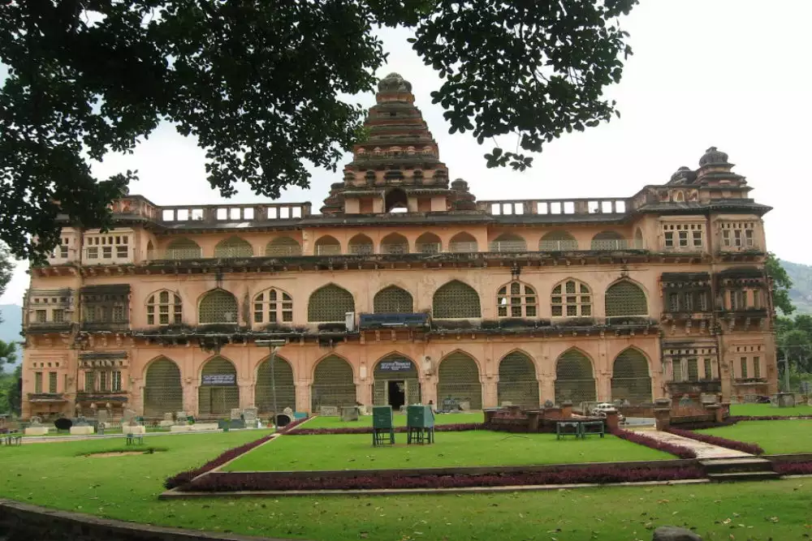
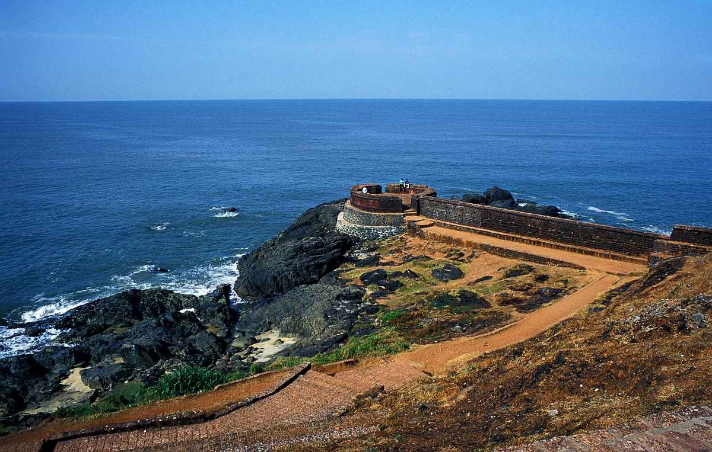

CHANDRAGIRI FORT

RANIPURAM

Kasargod, situated in the southern reaches of the Indian state of Kerala, is a region teeming with diverse cultural influences and natural beauty. Nestled along the picturesque Arabian Sea coast, it boasts a unique blend of landscapes, from pristine beaches to the lush Western Ghats that form its eastern border. This district is a melting pot of languages and cultures, influenced not only by Kerala but also by its close proximity to Karnataka. The confluence of Malayalam, Tulu, Kannada, and Konkani languages adds to its rich tapestry of traditions and celebrations. Historically significant with the presence of ancient forts and temples, Kasargod is known for its vibrant festivals and warm hospitality. With an economy rooted in agriculture, fishing, and small-scale industries, it offers a glimpse into the heart of rural Kerala. As it faces both challenges and opportunities in the modern era, the district's potential for tourism and sustainable development shines brightly, making it a captivating destination for travelers and a region worth exploring.